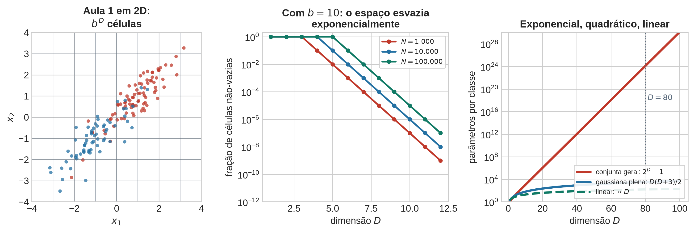
Distribuições Condicionais e Modelos Generativos
Aula 2 — Fundamentos Estatísticos do Aprendizado Supervisionado
1 Abertura — a receita da Aula 1, e a pergunta
A Aula 1 terminou com uma receita que funcionava, e que cabe em três linhas:
- ajuste uma densidade \(p(x \mid \mathcal{C}_k)\) para cada classe;
- pondere cada uma pela priori \(\pi_k\);
- decida pela conjunta maior — corte onde \(p(x\mid\mathcal{C}_1)\pi_1 = p(x\mid\mathcal{C}_2)\pi_2\).
Provamos que essa regra minimiza a probabilidade de erro, e a prova não usou família paramétrica nenhuma. Ela é geral.
Agora o problema do dia, em dois exemplos concretos:
- classificar e-mails como spam a partir da presença ou ausência de 5.000 palavras de vocabulário — \(\mathbf{x} \in \{0,1\}^{5000}\);
- classificar um pedido de crédito a partir de 80 variáveis cadastrais e comportamentais — \(\mathbf{x} \in \mathbb{R}^{80}\).
A receita da Aula 1 funciona aqui? É só trocar \(x\) por \(\mathbf{x}\)?
Responda antes de virar a página. A resposta que quase toda turma dá é sim — afinal, a demonstração do erro mínimo não fez nenhuma menção à dimensão de \(x\), e de fato ela continua válida. O problema não está na regra de decisão. Está em conseguir estimar o objeto de que a regra depende.
2 Bloco 1 — A dimensão quebra a receita
2.1 Passo 1 — A extensão óbvia, e o que ela custa
A generalização direta do histograma da Aula 1 é dividir o espaço em células e classificar pela classe majoritária de cada célula. É literalmente o método da Aula 1 desenhado em mais eixos (PRML, Figura 1.20, p. 35).
Faça a conta. Com \(b\) divisões por eixo e \(D\) dimensões, o número de células é \(b^D\). Com \(b = 10\) e \(D = 10\): \(10^{10}\) células. Com 10.000 exemplos de treino, uma célula em cada milhão contém um único ponto, e todo o resto está vazio. Não há como estimar uma densidade em células vazias — e a esmagadora maioria das células é vazia por construção, não por azar amostral.
O mesmo fenômeno sem discretização nenhuma. Uma distribuição conjunta geral sobre \(D\) atributos binários é uma tabela com \(2^D\) entradas que somam 1, ou seja, \(2^D - 1\) parâmetros livres — por classe (PRML, §4.2.3, p. 202). Com \(D = 80\), isso é \(2^{80} - 1 \approx 1{,}2 \times 10^{24}\) parâmetros. Não é um problema de computação: é um problema de que não existem dados no universo para identificar esses parâmetros.
E se abandonarmos o não-paramétrico e ajustarmos uma gaussiana multivariada por classe? São \(D\) médias mais \(D(D+1)/2\) entradas de covariância, isto é \(D(D+3)/2\) parâmetros. O crescimento é quadrático, não exponencial — uma melhora enorme. Mas com \(D = 1000\) já são cerca de meio milhão de parâmetros por classe, e há um obstáculo mais duro que a contagem: a matriz de covariância amostral é singular sempre que \(N < D\). Ela não é apenas mal condicionada; ela não é inversível, e o modelo nem chega a ser avaliável, porque \(\ln p(\mathbf{x}\mid\mathcal{C}_k)\) exige \(\Sigma_k^{-1}\) e \(\ln\det\Sigma_k\).
Os três regimes de crescimento merecem ser escritos lado a lado no quadro, porque a aula inteira consiste em descer nessa escada:
| Modelo | Parâmetros por classe | Regime | \(D = 80\) |
|---|---|---|---|
| Conjunta geral, atributos binários | \(2^D - 1\) | exponencial | \(1{,}2\times10^{24}\) |
| Gaussiana multivariada plena | \(D(D+3)/2\) | quadrático | \(3.320\) |
| (a ser descoberto no Bloco 3) | \(?\) | linear | \(?\) |
2.2 Passo 2 — A intuição geométrica também falha
O problema não é apenas contagem de parâmetros. É que o espaço em alta dimensão não se comporta como a intuição treinada em duas e três dimensões espera.
O exemplo canônico é o volume da esfera (PRML, Figura 1.22, p. 37). A fração do volume de uma esfera de raio 1 em \(\mathbb{R}^D\) contida na casca entre \(r = 1-\epsilon\) e \(r = 1\) é
\[ \frac{V_D(1) - V_D(1-\epsilon)}{V_D(1)} \;=\; 1 - (1-\epsilon)^D , \]
porque \(V_D(r) = K_D r^D\) e a constante \(K_D\) se cancela. Para \(D = 20\) e \(\epsilon = 0{,}1\), isso dá \(1 - 0{,}9^{20} \approx 0{,}88\): quase 90% do volume está numa casca de espessura 10%. Para \(D = 100\), praticamente todo o volume está a menos de 5% da superfície.
A consequência é direta e desconfortável:
Em alta dimensão, “perto do centro” é um lugar praticamente vazio.
As noções de vizinhança e de densidade local que sustentaram a Aula 1 perdem o significado que tinham. Um ponto típico não fica perto da moda; ele fica numa casca. Uma gaussiana em \(\mathbb{R}^{1000}\) tem sua massa concentrada numa casca fina de raio \(\approx \sigma\sqrt{D}\), e a moda — o ponto de maior densidade — está numa região onde essencialmente nenhuma amostra cai.
O fenômeno relacionado, e mais relevante para métodos baseados em distância, é a concentração das distâncias: para dados i.i.d., a razão entre a distância do vizinho mais próximo e a do mais distante tende a 1 quando \(D\) cresce. Se tudo está aproximadamente à mesma distância de tudo, “vizinho mais próximo” deixa de significar alguma coisa.
Mencionar também, de passagem, o crescimento \(D^M\) do número de coeficientes independentes de um polinômio de ordem \(M\) em \(D\) variáveis (PRML, eq. 1.74, p. 36). É o mesmo fenômeno visto pelo lado da capacidade do modelo, e uma prévia da Aula 8.
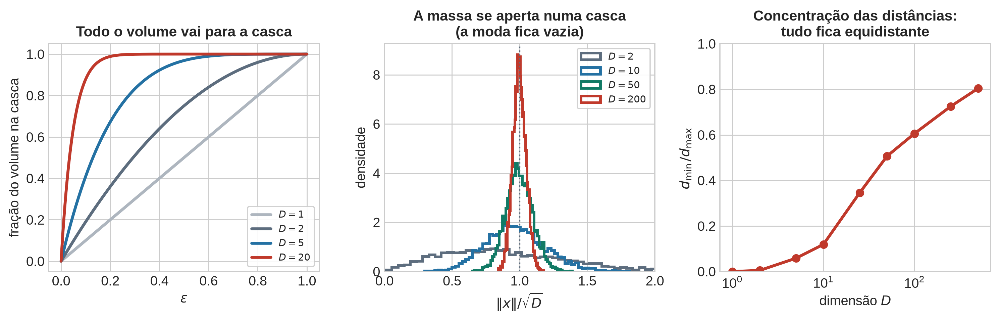
2.3 Passo 3 — O contrapeso honesto
Se a aula parasse aqui, a turma sairia com a conclusão errada de que aprendizado em alta dimensão é impossível. Não é — redes profundas operam rotineiramente em \(\mathbb{R}^{150000}\) e funcionam. Bishop dá as duas razões, na p. 37, e elas precisam ser ditas em voz alta.
Primeira: dados reais ocupam uma região de dimensão efetiva muito menor que a do espaço ambiente. Uma fotografia de rosto de \(500 \times 300\) pixels vive em \(\mathbb{R}^{150000}\), mas o conjunto das fotografias de rostos não ocupa qualquer canto desse espaço — ele é uma variedade de dimensão bem menor, parametrizada por pose, iluminação, identidade, expressão. Amostre um ponto uniformemente em \(\mathbb{R}^{150000}\) e você obtém ruído, nunca um rosto. Esta é a hipótese da variedade, e é a justificativa implícita de quase todo o aprendizado profundo.
Segunda: dados reais têm suavidade local. Pequenas variações na entrada produzem pequenas variações na saída. Sem isso, nenhuma forma de interpolação faria sentido, e generalização seria impossível em qualquer dimensão.
O enquadramento correto, e a frase que fecha o bloco:
A maldição da dimensionalidade não proíbe o aprendizado. Ela proíbe o aprendizado sem suposições.
Todo o resto do curso é um catálogo de suposições diferentes: independência condicional (hoje), partições axis-aligned (Aula 3), suavidade em bolas (vizinhos próximos), linearidade da fronteira (Aulas 5–6), margem máxima (Aula 11), composição hierárquica (Aula 12). Cada algoritmo é uma aposta sobre a estrutura dos dados, e escolher um algoritmo é escolher em que apostar.
Naive Bayes é a primeira suposição do curso, e é a mais brutal de todas.
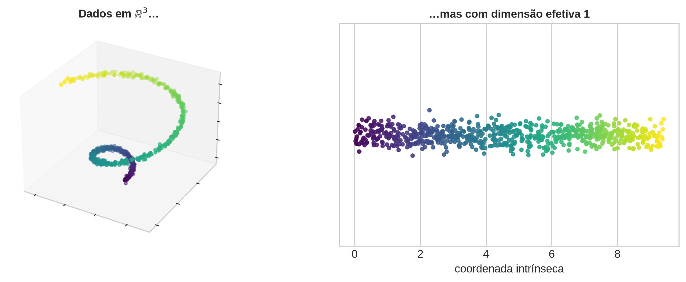
3 Bloco 2 — Bayes formal, e o que significa “generativo”
3.1 Passo 1 — As regras e a decomposição
Agora que existe uma necessidade, vale formalizar o que a Aula 1 construiu por indução visual. Toda a teoria de probabilidade que o curso usa se apoia em duas regras (DLFC §2.1.2, pp. 26–28):
\[ \textbf{soma:}\quad p(X) = \sum_Y p(X, Y) , \qquad\qquad \textbf{produto:}\quad p(X, Y) = p(Y \mid X)\, p(X) . \]
Aplicando a regra do produto nas duas ordens e igualando, sai o teorema de Bayes (DLFC §2.1.3, p. 28; §2.1.5, p. 31), com as quatro peças nomeadas:
\[ \underbrace{p(\mathcal{C}_k \mid \mathbf{x})}_{\text{posteriori}} = \frac{\overbrace{p(\mathbf{x} \mid \mathcal{C}_k)}^{\text{verossimilhança}}\; \overbrace{p(\mathcal{C}_k)}^{\text{priori}}} {\underbrace{p(\mathbf{x})}_{\text{evidência}}} , \qquad p(\mathbf{x}) = \sum_j p(\mathbf{x}\mid\mathcal{C}_j)\,\pi_j . \]
Uma observação que economiza confusão pelo curso inteiro:
DicaPara classificar, a evidência é irrelevante
\(p(\mathbf{x})\) não depende de \(k\). Ela some no \(\arg\max\) e some em qualquer comparação entre classes. Não é preciso calculá-la para decidir.
Ela volta a importar em dois lugares: na seleção de modelos (Aula 4), onde \(p(\mathcal{D}\mid\mathcal{M})\) é a verossimilhança marginal, e em detecção de anomalia, onde \(p(\mathbf{x})\) pequeno é justamente o sinal de interesse — como vimos na Aula 1.
Escreva também a forma que será usada o tempo todo. Definindo a ativação
\[ a_k(\mathbf{x}) \;=\; \ln p(\mathbf{x}\mid\mathcal{C}_k) + \ln \pi_k , \]
a posteriori é exatamente a softmax das ativações (PRML, eqs. 4.62–4.63, p. 198):
\[ p(\mathcal{C}_k\mid\mathbf{x}) = \frac{\exp a_k(\mathbf{x})}{\sum_j \exp a_j(\mathbf{x})} , \]
e no caso de duas classes, com \(a = a_1 - a_2\), a sigmoide logística (PRML, eq. 4.57, p. 197):
\[ p(\mathcal{C}_1\mid\mathbf{x}) = \frac{1}{1 + e^{-a}} = \sigma(a). \]
Vale destacar isso com ênfase, porque é uma das ideias mais mal compreendidas da área:
A sigmoide e a softmax não são escolhas de arquitetura. Elas caem de Bayes.
Elas são simplesmente a forma que a posteriori assume quando escrita em termos de log-verossimilhanças. Quando aparecerem na saída de uma regressão logística (Aula 6) ou de uma rede profunda (Aula 12), os alunos já terão visto de onde vêm — e por que o objeto natural produzido por um classificador é o logit, e não a probabilidade.
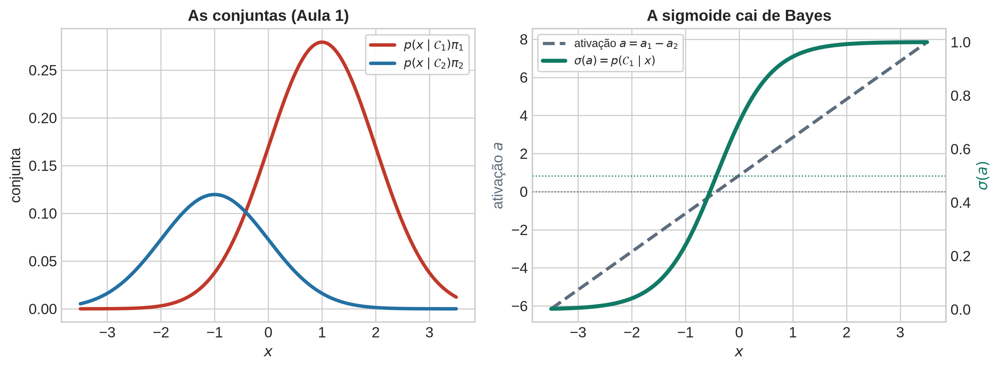
3.2 Passo 2 — O que “generativo” quer dizer
A definição é por contraste, seguindo PRML §1.5.4, pp. 42–46 (e DLFC §5.3, pp. 150–156):
| Abordagem | Modela | Consegue |
|---|---|---|
| Generativa | \(p(\mathbf{x}\mid\mathcal{C}_k)\) e \(\pi_k\) | classificar, detectar anomalia, gerar dados novos |
| Discriminativa | \(p(\mathcal{C}_k\mid\mathbf{x})\) diretamente | classificar, com probabilidade |
| Função discriminante | \(f(\mathbf{x}) \to k\) | classificar, sem probabilidade nenhuma |
A palavra “generativo” só deixa de ser jargão quando se faz a demonstração: ajuste o modelo e amostre dele. O modelo produz exemplos que nunca existiram, porque ele descreve como os dados nascem, e não apenas onde fica a fronteira. Um modelo discriminativo não tem como fazer isso — ele nunca representou \(p(\mathbf{x})\).
A figura abaixo faz exatamente isso com o problema-fio da aula: renda e gasto, duas classes, forte correlação positiva entre os dois atributos. À esquerda, os dados; à direita, amostras sintéticas do modelo generativo ajustado.
Guarde essa demonstração. Ela vai ser reutilizada no Bloco 4 com efeito bem diferente.
Feita a demonstração, aponte o custo. O modelo generativo estima muito mais do que precisa. Para decidir entre duas classes bastaria conhecer a fronteira — um objeto de dimensão \(D-1\). Ele modela as duas populações inteiras em \(\mathbb{R}^D\). Essa é a razão profunda pela qual ele sofre tanto com a dimensionalidade: o esforço estatístico é gasto em regiões do espaço que não influenciam decisão nenhuma. É por isso que a Aula 6 vai propor o caminho discriminativo, e é por isso que a maior parte dos classificadores em produção é discriminativa.
O contraponto — e a razão pela qual modelos generativos não desapareceram — é a coluna “consegue”: detecção de anomalia, dados faltantes, geração, e a capacidade de incorporar conhecimento de domínio sobre o processo gerador.
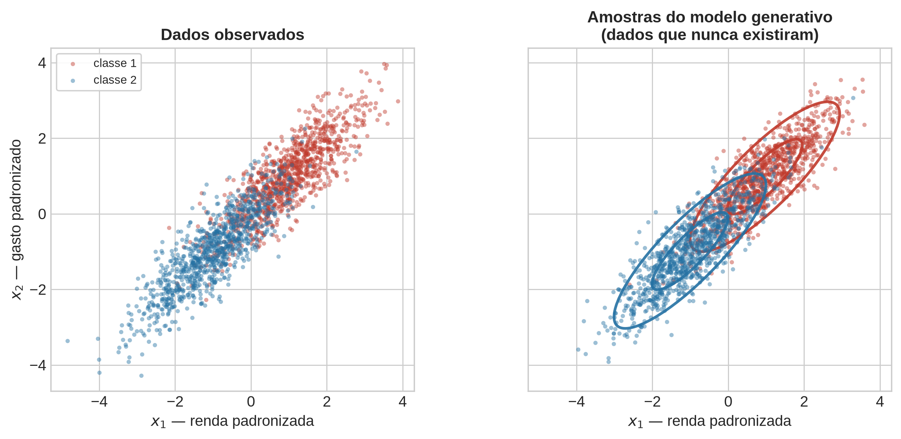
4 Bloco 3 — A suposição ingênua como conserto
4.1 Passo 1 — A suposição
Use o exemplo do próprio Bishop, que continua o fio médico da Aula 1 (PRML §1.5.4, p. 46, eqs. 1.84–1.85): diagnóstico a partir de uma radiografia \(x_I\) e de um exame de sangue \(x_B\). A suposição é
\[ p(x_I,\, x_B \mid \mathcal{C}_k) \;=\; p(x_I \mid \mathcal{C}_k)\; p(x_B \mid \mathcal{C}_k), \]
e o nome dela é independência condicional.
Insista na palavra condicional. A afirmação não é que radiografia e exame de sangue sejam independentes — eles claramente não são, porque pessoas doentes tendem a ter ambos alterados, o que produz correlação marginal forte. A afirmação é que, uma vez fixada a doença, um exame não acrescenta informação sobre o outro. Bishop registra explicitamente que a marginal conjunta \(p(x_I, x_B)\) tipicamente não fatora sob esse modelo:
\[ p(x_I, x_B) = \sum_k \pi_k\, p(x_I\mid\mathcal{C}_k)\,p(x_B\mid\mathcal{C}_k) \;\;\neq\;\; p(x_I)\,p(x_B) . \]
A mistura de produtos não é um produto. A independência condicional gera correlação marginal.
Este é o ponto conceitual mais escorregadio da aula, e merece um segundo exemplo, do cotidiano: altura e vocabulário de crianças são fortemente correlacionados — crianças mais altas sabem mais palavras. Condicionados à idade, a correlação praticamente desaparece. Ninguém acha que crescer causa aprender palavras; a idade é a causa comum, e ela é a “classe” deste exemplo.
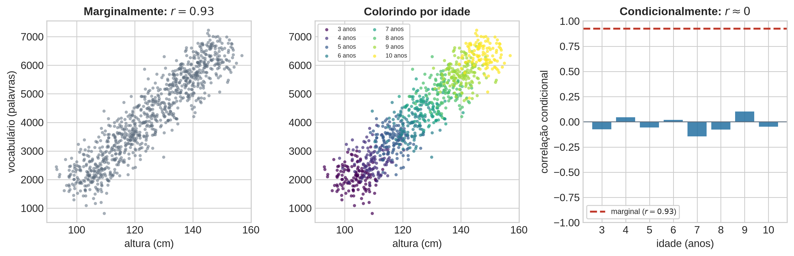
O grafo do modelo (PRML, Figura 8.24, p. 380) resume a estrutura: a classe no topo, os atributos pendurados nela, e nenhuma aresta entre atributos. Observar a classe bloqueia o caminho entre os atributos — que é a leitura gráfica da independência condicional.
(Aqui a figura é uma imagem, não um tópico: o curso não tem espaço para \(d\)-separação e modelos gráficos.)
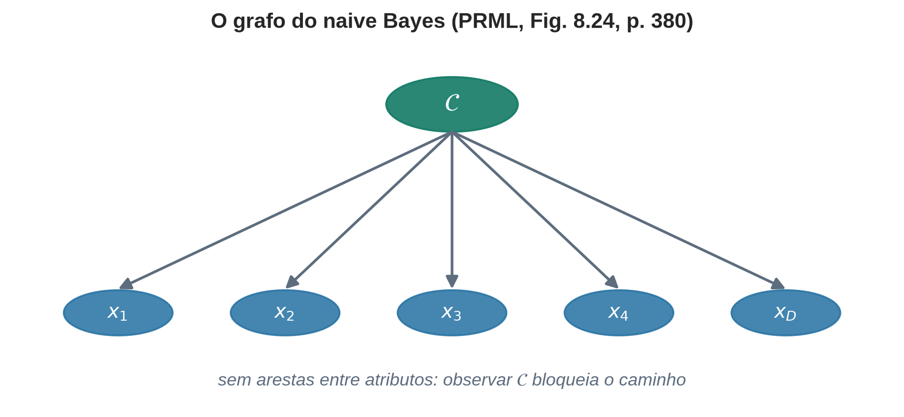
4.2 Passo 2 — O que a suposição compra
Generalizando para \(D\) atributos:
\[ p(\mathbf{x}\mid\mathcal{C}_k) \;=\; \prod_{d=1}^{D} p(x_d \mid \mathcal{C}_k). \]
Agora refaça a contagem do Bloco 1 na mesma coluna do quadro:
| Modelo | Parâmetros por classe | Regime | \(D = 80\) |
|---|---|---|---|
| Conjunta geral, atributos binários | \(2^D - 1\) | exponencial | \(1{,}2\times 10^{24}\) |
| Gaussiana multivariada plena | \(D(D+3)/2\) | quadrático | \(3.320\) |
| Naive Bayes | \(\mathbf{D}\), ou \(cD\) com \(c\) pequeno | linear | \(\mathbf{80}\) |
Exponencial \(\to\) quadrático \(\to\) linear. Com \(D = 80\) atributos binários, sai de \(10^{24}\) para \(80\).
E então a frase que costura o curso inteiro:
Cada fator \(p(x_d \mid \mathcal{C}_k)\) é uma densidade unidimensional — exatamente o objeto que a Aula 1 ensinou a ajustar.
Beta para atributos em \([0,1]\), gaussiana para atributos reais, Bernoulli para binários, categórica para nominais, Poisson para contagens. Naive Bayes é a Aula 1 aplicada \(D\) vezes, com os resultados multiplicados e ponderados pela priori. Não é um algoritmo novo; é uma suposição estrutural aplicada a um modelo generativo — que é exatamente por que Bishop nunca o trata como tópico de primeira classe.
Note também que a fatoração resolve o problema de singularidade do Bloco 1 de graça: cada fator é estimado a partir de uma coluna, e \(N < D\) deixa de ser um obstáculo. Naive Bayes é utilizável com \(N = 20\) e \(D = 5000\), e é essa propriedade que o manteve vivo em classificação de texto por décadas.
4.3 Passo 3 — A forma do classificador
Substituindo na expressão da ativação:
\[ \boxed{\; a_k(\mathbf{x}) \;=\; \ln \pi_k \;+\; \sum_{d=1}^{D} \ln p(x_d \mid \mathcal{C}_k) \;} \]
Três leituras desta linha, todas úteis.
1. É uma soma de evidências. Cada atributo deposita \(\ln p(x_d\mid\mathcal{C}_k)\) numa balança, e a priori é o peso inicial do prato. A interpretação é intuitiva e correta, e é a base de toda a interpretabilidade do naive Bayes: dá para listar quais atributos empurraram a decisão para cada lado, e quanto.
2. É numericamente estável. O produto de 5.000 probabilidades pequenas causa underflow em ponto flutuante — \(10^{-3}\) elevado a 5.000 é zero em qualquer aritmética de precisão dupla. A soma dos logaritmos, não. Trabalhar em log-espaço não é uma otimização: é obrigatório.
3. Ela pode ser linear em \(\mathbf{x}\) — e aqui é preciso ser cuidadoso, porque é fácil errar.
Para atributos binários com \(p(x_d\mid\mathcal{C}_k) = \mu_{kd}^{x_d} (1-\mu_{kd})^{1-x_d}\) (PRML, eqs. 4.81–4.82, p. 202):
\[ a_k(\mathbf{x}) = \ln\pi_k + \sum_d \Big[ x_d \ln\mu_{kd} + (1-x_d)\ln(1-\mu_{kd}) \Big] = \underbrace{\sum_d x_d \ln\frac{\mu_{kd}}{1-\mu_{kd}}}_{\text{linear em } \mathbf{x}} + \underbrace{\ln\pi_k + \sum_d \ln(1-\mu_{kd})}_{\text{constante}} . \]
Logo \(p(\mathcal{C}_1\mid\mathbf{x}) = \sigma(\mathbf{w}^\top\mathbf{x} + w_0)\): uma sigmoide de uma função linear.
ImportanteNão atribua a linearidade ao naive Bayes
A linearidade não vem da suposição ingênua. Vem da família das densidades escolhidas — especificamente, do fato de os fatores pertencerem à família exponencial com \(\mathbf{x}\) como estatística suficiente.
Há dois caminhos distintos para fronteira linear no Bishop, e confundi-los é o erro mais comum:
- Gaussianas com covariância plena compartilhada entre classes (§4.2.1, eqs. 4.64–4.67, pp. 198–200). Os termos quadráticos \(-\tfrac12\mathbf{x}^\top\Sigma_k^{-1}\mathbf{x}\) são idênticos nas duas classes e se cancelam na diferença. Isto não é naive Bayes — a covariância é cheia, com \(D(D+1)/2\) parâmetros.
- Naive Bayes com atributos binários (§4.2.3, p. 202), ou naive gaussiano com variâncias compartilhadas entre classes — que é o caso diagonal do anterior.
Se os fatores forem Betas (Aula 1), \(a_k\) é linear nos \(\ln x_d\) e \(\ln(1-x_d)\), e não em \(\mathbf{x}\). A afirmação geral e segura é apenas: \(a_k = \ln p(\mathbf{x}\mid\mathcal{C}_k) + \ln\pi_k\), sempre. Ser linear em \(\mathbf{x}\) é uma propriedade da família escolhida.
A observação que fecha o bloco. Um modelo generativo com suposições agressivas produz exatamente a mesma forma funcional que a regressão logística, que a Aula 6 vai obter por um caminho completamente diferente — estimando a fronteira diretamente, sem modelar \(p(\mathbf{x})\) e sem supor independência de nada.
Dois caminhos, mesma forma, ajustes diferentes. O generativo estima \(\mathbf{w}\) indiretamente, via as densidades; o discriminativo estima \(\mathbf{w}\) diretamente, maximizando a verossimilhança condicional. Quando a suposição generativa é boa, o primeiro é mais eficiente com poucos dados; quando ela é ruim, o segundo é assintoticamente melhor. Isso é a Aula 6 antecipada em um parágrafo.
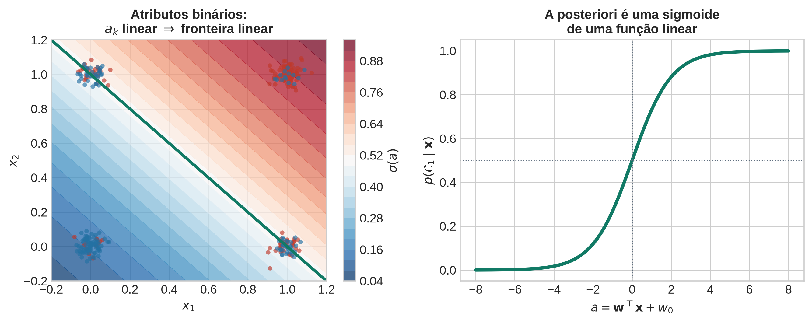
5 Bloco 4 — Quando falha, e quando não importa
5.1 Passo 1 — A demonstração cruel
Retome o modelo generativo do Bloco 2 e amostre dele agora sob a suposição ingênua. O contraste é o argumento mais convincente que existe de que o modelo está errado — e o mais eficiente, porque não exige conta nenhuma.
Os dados têm correlação positiva forte entre renda e gasto: quem ganha mais gasta mais. O modelo naive ajusta corretamente cada marginal — a distribuição de renda está certa, a de gasto está certa — e depois as combina como se fossem independentes. O resultado são perfis sintéticos com renda do percentil 5 e gasto do percentil 95: cada atributo isolado é plausível, o conjunto é impossível.
A suposição de independência é literalmente visível na amostra.
Em texto o efeito é ainda mais gritante: um gerador naive de e-mails produz mensagens em que cada palavra tem frequência correta e nenhuma sequência faz sentido.
A radicalização: duplicar um atributo
Agora leve a falha ao limite. Duplique um atributo \(m\) vezes, de modo que \(x_1 = x_2 = \dots = x_m\). O termo \(\ln p(x_1\mid\mathcal{C}_k)\) entra \(m\) vezes na soma:
\[ a_k(\mathbf{x}) = \ln\pi_k + m\,\ln p(x_1\mid\mathcal{C}_k) + \sum_{d>m}\ln p(x_d\mid\mathcal{C}_k). \]
A mesma evidência é contada \(m\) vezes. A diferença \(a_1 - a_2\) é multiplicada, e a posteriori corre para \(0\) ou \(1\). Nenhuma informação nova entrou — apenas foi copiada — e a confiança do modelo explodiu.
Naive Bayes é sistematicamente superconfiante, porque atributos correlacionados carregam evidência redundante que o modelo trata como independente.
Guarde este mecanismo. No Passo 2 ele vai reaparecer de forma quantitativa, e vai explicar por que a acurácia sobrevive à catástrofe da calibração.
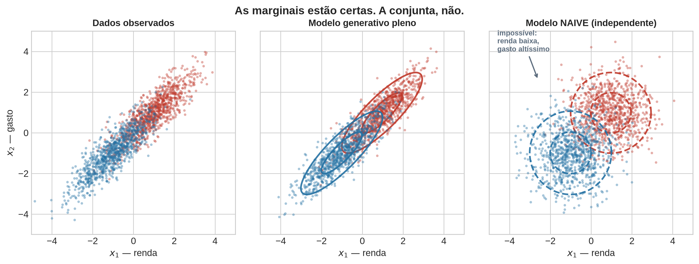
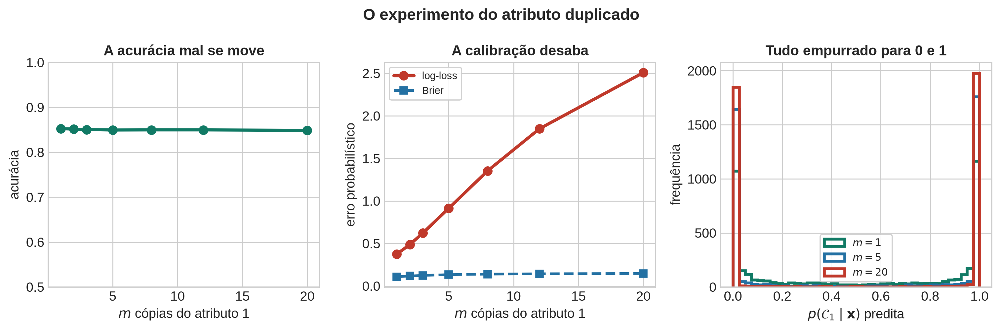
5.2 Passo 2 — Por que ele funciona mesmo assim
Escreva a correção de dependência, sem aproximação nenhuma. Defina
\[ R_k(\mathbf{x}) \;\equiv\; \frac{p(\mathbf{x}\mid\mathcal{C}_k)}{\prod_d p(x_d\mid\mathcal{C}_k)} \qquad\Longrightarrow\qquad p(\mathbf{x}\mid\mathcal{C}_k) = \Big[\prod_{d=1}^{D} p(x_d\mid\mathcal{C}_k)\Big]\cdot R_k(\mathbf{x}) . \]
Isso é uma identidade, não um modelo: \(R_k\) é exatamente tudo aquilo que naive Bayes joga fora — a cópula da classe \(k\), na linguagem da estatística multivariada. Para duas classes, a decisão depende só da diferença das ativações:
\[ a_1(\mathbf{x}) - a_2(\mathbf{x}) = \underbrace{\ln\frac{\pi_1}{\pi_2} + \sum_d \ln\frac{p(x_d\mid\mathcal{C}_1)}{p(x_d\mid\mathcal{C}_2)}}_{\text{o que naive Bayes calcula}} \;+\; \underbrace{\ln\frac{R_1(\mathbf{x})}{R_2(\mathbf{x})}}_{\text{o que ele ignora}} . \]
Se a estrutura de dependência for a mesma nas duas classes, isto é \(R_1(\mathbf{x}) = R_2(\mathbf{x})\) para todo \(\mathbf{x}\), o último termo é exatamente zero, e a fronteira de decisão do naive Bayes coincide com a fronteira ótima — apesar de as duas posterioris estarem erradas.
Este é o resultado da aula, e ele responde à pergunta de forma cirúrgica:
- A calibração degrada quase sempre. As probabilidades produzidas são ruins e superconfiantes, e isso não tem conserto dentro do modelo.
- A classificação só degrada quando a dependência entre atributos difere entre as classes. Correlação alta, por si só, não é o problema; correlação com estrutura diferente por classe é.
- O \(\arg\max\) é invariante a qualquer transformação monótona da posteriori, e é por isso que um modelo com probabilidades erradas ainda pode acertar o rótulo.
AvisoCorreção importante: covariância compartilhada não basta
É tentador ilustrar \(R_1 = R_2\) com “duas gaussianas com a mesma matriz de covariância \(\Sigma\), não-diagonal”. Isso está errado, e vale corrigir de forma explícita porque o erro é comum.
Com \(\Sigma\) compartilhada e \(\mathbf{D} = \operatorname{diag}(\Sigma)\), ambas as fronteiras são hiperplanos que passam pelo mesmo ponto quando \(\pi_1=\pi_2\), mas com normais diferentes:
\[ \mathbf{v}_{\text{ótimo}} = \Sigma^{-1}\Delta\boldsymbol\mu , \qquad \mathbf{u}_{\text{naive}} = \mathbf{D}^{-1}\Delta\boldsymbol\mu , \qquad \Delta\boldsymbol\mu = \boldsymbol\mu_1 - \boldsymbol\mu_2 . \]
Para \(\Sigma = \left(\begin{smallmatrix}1 & 0{,}9\\ 0{,}9 & 1\end{smallmatrix}\right)\) e \(\Delta\boldsymbol\mu = (1,0)^\top\), temos \(\mathbf{v} \propto (1,\,-0{,}9)\) e \(\mathbf{u} \propto (1,\,0)\) — o ângulo entre elas é de \(42^\circ\). As fronteiras são bem diferentes, e \(R_1 \neq R_2\) porque \(R_k\) é função de \(\mathbf{x}-\boldsymbol\mu_k\) e as médias diferem.
A condição correta, para gaussianas com \(\Sigma\) compartilhada:
\[ \boxed{\;\Sigma^{-1}\Delta\boldsymbol\mu \;=\; c\,\mathbf{D}^{-1}\Delta\boldsymbol\mu \quad\text{para algum } c>0\;} \]
isto é, \(\Delta\boldsymbol\mu\) é autovetor de \(\Sigma\mathbf{D}^{-1}\). Com \(\pi_1 = \pi_2\) isso é necessário e suficiente. Com prioris desiguais é preciso ainda \(c = 1\), porque o deslocamento \(\ln(\pi_1/\pi_2)\) é dividido por normais de magnitudes diferentes.
O caso limpo que satisfaz a condição: \(\Sigma\) equicorrelacionada, \(\Sigma = \sigma^2[(1-\rho)I + \rho\,\mathbf{1}\mathbf{1}^\top]\), com \(\Delta\boldsymbol\mu \propto \mathbf{1}\) — porque \(\mathbf{1}\) é autovetor de \(\Sigma\) e de \(\mathbf{D}^{-1}\) simultaneamente.
O escalar \(c\) é a superconfiança, medida
Vale a pena olhar para o que \(c\) significa. Sob a condição acima e com \(\pi_1=\pi_2\),
\[ a^{\text{ótimo}}(\mathbf{x}) \;=\; c \cdot a^{\text{naive}}(\mathbf{x}), \qquad c = \frac{1}{(1-\rho) + \rho D} \;<\; 1 \ \text{ para } \rho > 0 . \]
As duas ativações são proporcionais: mesma ordenação, mesma fronteira, magnitudes diferentes. Com \(D = 5\) e \(\rho = 0{,}8\), \(c \approx 0{,}24\) — o logit do naive Bayes é cerca de 4,2 vezes maior que o correto.
Isso amarra o Passo 1 ao Passo 2 de forma exata. A superconfiança do naive Bayes é, neste caso, uma temperatura errada no logit — e o conserto é literalmente dividir por \(1/c\), que é o temperature scaling que a Aula 1 mencionou na discussão de calibração. Redundância entre atributos infla o logit; a decisão sobrevive porque o \(\arg\max\) não vê escala, e a probabilidade não sobrevive porque ela vê.
Condição forte e raramente satisfeita de forma exata — diga isso. Mas ela explica o fenômeno empírico que confunde todo mundo: naive Bayes é um classificador competitivo e um estimador de probabilidade péssimo.
NotaConsequência prática
Se o produto final é uma decisão binária, naive Bayes pode servir.
Se o produto final é um escore que vai alimentar uma política de corte, um preço ou um limite de crédito — isto é, se a probabilidade em si é o entregável — não use naive Bayes sem calibração posterior. E note que isso retoma exatamente o fecho da Aula 1: o limiar ótimo depende de prioris e custos, e essa conta pressupõe probabilidades calibradas. A Aula 11 tratará de calibração no contexto de SVM; o problema é o mesmo.
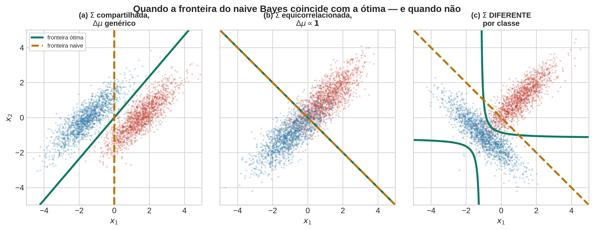
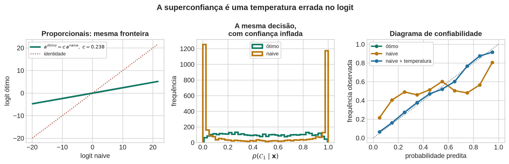
5.3 Passo 3 — Contagens zeradas, e um reencontro
Um problema concreto e imediato na implementação. Se uma palavra do vocabulário nunca apareceu na classe “spam” no conjunto de treino, então \(\hat{p}(x_d = 1 \mid \text{spam}) = 0\), o produto inteiro zera, e nenhuma evidência dos outros 4.999 atributos consegue recuperar. Em log-espaço: \(\ln 0 = -\infty\), e a soma é \(-\infty\) independentemente do resto.
Um único zero anula tudo. E zeros são inevitáveis: com 5.000 palavras e alguns milhares de e-mails, muitas células de contagem ficam vazias por pura escassez amostral, não porque o evento seja impossível.
O conserto padrão é a suavização de Laplace: some 1 a cada contagem. Mas vale mostrar de onde ela vem, porque é um reencontro.
Coloque uma priori Beta sobre o parâmetro \(\mu\) da Bernoulli de cada atributo. Observadas \(m\) ocorrências em \(N = m + l\) tentativas, a posteriori é (PRML, eq. 2.18, p. 72):
\[ p(\mu \mid m, l) \;=\; \operatorname{Beta}(\mu \mid m + a,\; l + b), \]
porque a Beta é conjugada à Bernoulli — a forma funcional se preserva, e a atualização é uma soma de contagens nos hiperparâmetros. A média a posteriori é
\[ \mathbb{E}[\mu \mid m, l] = \frac{m + a}{m + a + l + b} , \qquad\text{e com } a = b = 1: \quad \frac{m+1}{N+2}. \]
A suavização “add-one” é a média a posteriori sob priori uniforme.
Não é um truque de engenharia; é inferência bayesiana com \(\operatorname{Beta}(1,1)\).
DicaO reencontro com a Aula 1
A Aula 1 usou a Beta como modelo dos dados em \([0,1]\), e avisou explicitamente que o PRML a apresenta em outro papel — como priori conjugada sobre um parâmetro. Aqui ela aparece no papel original do PRML, e resolve um problema de engenharia concreto que os alunos acabaram de encontrar.
Os hiperparâmetros \(a\) e \(b\) são, literalmente, um número efetivo de observações imaginárias: \(a\) sucessos e \(b\) fracassos que você finge ter visto antes de olhar os dados. Bishop dá essa interpretação na p. 72, e ela volta na Aula 7 como regularização — onde o “número de observações imaginárias” reaparece como a força de um termo de penalidade.
Quando \(N \to \infty\), a média a posteriori converge para a frequência amostral: a priori é lavada pelos dados, como deve ser.
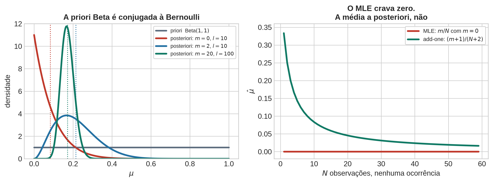
6 Fechamento e ponte
A aula cabe em três frases.
- Em alta dimensão, estimar \(p(\mathbf{x}\mid\mathcal{C}_k)\) sem suposições é impossível. A maldição da dimensionalidade não proíbe aprender; proíbe aprender sem suposições.
- Independência condicional derruba a contagem de parâmetros de exponencial para linear, e transforma o problema em \(D\) cópias da Aula 1.
- O preço é pago em calibração, quase sempre; e em acurácia apenas quando a dependência entre atributos difere entre as classes — ou, mais precisamente, quando o desalinhamento entre \(\Sigma^{-1}\Delta\boldsymbol\mu\) e \(\mathbf{D}^{-1}\Delta\boldsymbol\mu\) é grande.
Ponte para a Aula 3
Naive Bayes fixa a fatoração a priori: o modelador decide, antes de ver os dados, que os atributos não interagem. É uma suposição forte, explícita e verificável — e essas três propriedades são virtudes.
Árvores de decisão fazem o oposto. Elas não supõem independência de coisa alguma: aprendem a partição do espaço a partir dos dados, e cada divisão condiciona todas as divisões abaixo dela, o que é precisamente a capacidade de capturar interação que o naive Bayes descartou.
O preço muda de lugar. Deixa de ser uma suposição estrutural e passa a ser: (i) a busca pela partição é gulosa, e não há garantia de otimalidade; (ii) a estimativa de densidade dentro de cada folha é constante por partes, o que produz fronteiras em degraus e probabilidades grosseiras; (iii) o modelo tem variância alta e precisa de poda ou de agregação.
Trocamos uma suposição forte e explícita por uma busca subótima. Esse é o padrão que vai se repetir: cada algoritmo do curso é uma escolha diferente sobre onde pagar.
7 Do quadro ao estado da arte
Naive Bayes é frequentemente apresentado como uma curiosidade histórica — o classificador de spam dos anos 1990. A fatoração que o define, porém, é uma das ideias mais reutilizadas do aprendizado de máquina moderno, e a superconfiança que ela produz é um problema aberto em sistemas de produção hoje.
7.0.1 1. Campo médio variacional é naive Bayes na posteriori
A inferência variacional de campo médio aproxima uma posteriori intratável \(p(\mathbf{z}\mid\mathbf{x})\) por uma família fatorada:
\[ q(\mathbf{z}) = \prod_{i} q_i(z_i). \]
É exatamente a mesma suposição do Bloco 3, aplicada às variáveis latentes em vez dos atributos observados. E ela produz exatamente a mesma patologia, por exatamente a mesma razão: ao ignorar as correlações a posteriori, o campo médio subestima sistematicamente a variância. Minimizar \(\mathrm{KL}(q\,\|\,p)\) força \(q\) a se encaixar dentro de um dos modos de \(p\), e a incerteza reportada fica pequena demais.
Isso não é uma analogia: é o mesmo fenômeno. Um VAE com posteriori gaussiana diagonal \(q(\mathbf{z}\mid\mathbf{x}) = \prod_i \mathcal{N}(z_i \mid \mu_i, \sigma_i^2)\) é um modelo naive na posteriori, e as consequências práticas — incerteza subestimada, decisões superconfiantes a jusante — são as do Passo 1 deste bloco. É também por isso que existem normalizing flows aplicados à posteriori variacional, full-covariance e structured mean-field: são tentativas de recuperar o \(R_k\) que a fatoração jogou fora.
7.0.2 2. Fatoração autorregressiva: a mesma forma, sem a suposição
Um LLM fatora a distribuição de uma sequência assim:
\[ p(x_1,\dots,x_T) \;=\; \prod_{t=1}^{T} p(x_t \mid x_{<t}). \]
À primeira vista parece a mesma coisa. Não é, e a diferença é o ponto mais importante desta seção. Essa fatoração é a regra da cadeia — uma identidade, verdadeira para qualquer distribuição, sem suposição nenhuma. O naive Bayes fatora em \(\prod_t p(x_t)\), que exige independência e é falso.
O que se paga por não fazer a suposição: cada fator \(p(x_t\mid x_{<t})\) é uma distribuição condicionada em um contexto de tamanho crescente, e representá-la exige um modelo enorme. É por isso que existe o mecanismo de atenção. A atenção é, literalmente, a maquinaria construída para modelar as dependências entre posições que o naive Bayes descarta.
O contraste, dito de forma nítida: um modelo de bag of words é naive Bayes sobre texto — cada palavra contribui independentemente, e a ordem não existe. Um transformer é a fatoração honesta. A distância entre os dois é a distância entre 1998 e hoje.
7.0.3 3. Superconfiança e calibração
O Passo 2 mostrou que, no caso equicorrelacionado, o logit do naive Bayes é o logit ótimo multiplicado por \(1/c > 1\) — uma temperatura errada. Redes profundas modernas exibem a mesma assinatura: são sistematicamente superconfiantes, e o temperature scaling — dividir os logits por um único escalar \(T\) ajustado em validação — corrige a maior parte do problema com um único parâmetro.
O paralelo é instrutivo. Uma rede profunda vê atributos massivamente redundantes (pixels vizinhos, tokens correlacionados) e, ao somar evidências correlacionadas, comete uma versão do erro do atributo duplicado. Que um único escalar conserte tanto sugere que a patologia é, em boa medida, de escala e não de ordenação — que é exatamente o que a decomposição \(a^{\text{ótimo}} = c\, a^{\text{naive}}\) diz.
E a lição da Aula 1 se fecha: o limiar ótimo depende de prioris e custos, e essa conta pressupõe probabilidades calibradas. Um classificador que ordena bem e calibra mal não pode ter seu limiar escolhido por teoria da decisão — só empiricamente.
7.0.4 4. A maldição da dimensionalidade e a hipótese da variedade
O Bloco 1 mostrou que \(10^{10}\) células ficam vazias com 10.000 pontos. Redes profundas operam em \(\mathbb{R}^{150000}\) e funcionam. A reconciliação é o Passo 3: dados reais vivem em variedades de dimensão efetiva baixa, e a arquitetura das redes — convoluções, atenção, invariâncias — é uma forma de codificar suposições sobre essa variedade.
Dito de outro modo: a arquitetura é a suposição. Uma CNN supõe localidade e invariância a translação; um transformer supõe que a relevância entre posições pode ser aprendida por produto interno; um modelo de difusão supõe uma cadeia de Markov de corrupção gradual. Nenhum deles aprende sem suposições, porque o Bloco 1 provou que isso é impossível.
7.0.5 O fecho
\[ \underbrace{\text{fatorar}}_{\text{escolher o que ignorar}} \;\longrightarrow\; \underbrace{\text{estimar barato}}_{\text{linear em } D} \;\longrightarrow\; \underbrace{\text{decidir bem}}_{\text{se } R_1 \approx R_2} \;\longrightarrow\; \underbrace{\text{calibrar mal}}_{\text{sempre}} \]
Sessenta anos separam o naive Bayes do transformer, e a pergunta é a mesma: quais dependências você pode se dar ao luxo de ignorar?
8 Laboratório computacional
- Reproduzir a falha. Gerar dados com \(D\) crescente e tentar estimar \(p(\mathbf{x}\mid\mathcal{C}_k)\) por histograma multidimensional. Plotar a fração de células vazias contra \(D\). A curva é o Bloco 1 em uma imagem. Acrescentar: a menor dimensão \(D\) para a qual a covariância amostral fica singular com \(N\) fixo.
- Implementar naive Bayes do zero, em log-espaço, com fatores escolhidos por tipo de atributo — Bernoulli para binário, gaussiano para real, Beta para \([0,1]\), reutilizando o código da Aula 1. Comparar com
sklearn.naive_bayese verificar que batem. - Amostrar do modelo ajustado e inspecionar os exemplos sintéticos. Escrever uma frase explicando por que eles são incoerentes.
- O experimento do atributo duplicado. Replicar um atributo \(m = 1, 2, 5, 20\) vezes e plotar duas curvas contra \(m\): acurácia e log-verossimilhança preditiva (ou Brier). A acurácia mal se move; a calibração desaba.
- O experimento do cancelamento. Construir três conjuntos sintéticos:
- \(\Sigma\) compartilhada com \(\Delta\boldsymbol\mu\) genérico — verificar que as fronteiras já diferem, contrariando a intuição;
- \(\Sigma\) equicorrelacionada com \(\Delta\boldsymbol\mu \propto \mathbf{1}\) — verificar que coincidem;
- \(\Sigma\) diferente por classe — verificar que a fronteira ótima é quadrática e a naive é linear. É a verificação empírica da derivação 2, com a correção incluída.
- Diagrama de confiabilidade antes e depois de calibração isotônica, e antes e depois de temperature scaling. Comparar a AUC nos três casos e observar que ela não muda — a calibração é monótona, e monótona não altera ordenação. Conecta diretamente com o laboratório da Aula 1.
Os itens 4 e 5 são o retorno intelectual do laboratório e não devem ser cortados.
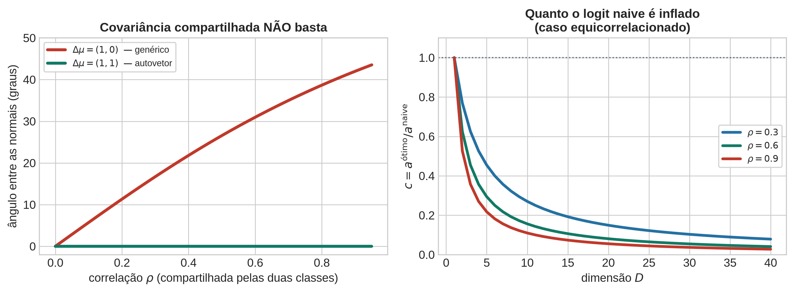
9 Derivações no quadro
Ordem de prioridade; cortar de baixo para cima.
- \(a_k(\mathbf{x}) = \ln\pi_k + \sum_d \ln p(x_d\mid\mathcal{C}_k)\) a partir de Bayes. Obrigatória — é o classificador.
- A decomposição com \(R_k\) e o cancelamento exato quando \(R_1 = R_2\). Duas linhas, e é o resultado conceitual da aula. Acrescentar a condição correta para gaussianas, \(\Sigma^{-1}\Delta\boldsymbol\mu \propto \mathbf{D}^{-1}\Delta\boldsymbol\mu\) — sem isso, o exemplo mais natural que ocorre à turma é um contraexemplo.
- Linearidade de \(a_k\) para atributos binários (PRML, eqs. 4.81–4.82, p. 202). Curta, e prepara a Aula 6.
- Suavização de Laplace como média a posteriori sob priori Beta (PRML, eq. 2.18, p. 72).
- Cancelamento dos termos quadráticos sob covariância compartilhada (PRML, eqs. 4.64–4.67, pp. 198–200). Boa, mas é a primeira a cair se o tempo apertar; pode ir para a lista de exercícios.
10 Exercícios
- PRML 1.16 (referenciado na p. 36) — crescimento \(D^M\) do número de coeficientes independentes de um polinômio de ordem \(M\) em \(D\) variáveis.
- PRML 4.11 (p. 222) — mostrar que, sob independência condicional com codificação 1-de-\(L\), as quantidades \(a_k\) são funções lineares dos atributos. Bishop registra no enunciado que este é justamente o modelo naive Bayes.
- PRML 4.9 / 4.10 (p. 222) — solução de máxima verossimilhança para as prioris de classe e para os parâmetros das condicionais gaussianas.
- Exercício do curso (corrigido). Sejam duas gaussianas bivariadas com a mesma matriz de covariância \(\Sigma\) não-diagonal e prioris iguais.
- Mostre que as fronteiras ótima e naive são ambas hiperplanos passando por \((\boldsymbol\mu_1+\boldsymbol\mu_2)/2\), com normais \(\Sigma^{-1}\Delta\boldsymbol\mu\) e \(\mathbf{D}^{-1}\Delta\boldsymbol\mu\).
- Conclua que elas coincidem se e somente se \(\Delta\boldsymbol\mu\) é autovetor de \(\Sigma\mathbf{D}^{-1}\), e exiba um contraexemplo com \(\Delta\boldsymbol\mu\) genérico.
- Verifique que \(\Sigma\) equicorrelacionada com \(\Delta\boldsymbol\mu\propto\mathbf{1}\) satisfaz a condição, calcule \(c\) explicitamente, e mostre que as posterioris ainda assim não coincidem.
- Mostre que, com prioris desiguais, a coincidência exige \(c = 1\), e portanto falha sempre que \(\rho \neq 0\).
- Exercício do curso (extra). Mostre que \(R_1 = R_2\) é suficiente mas não necessário para a coincidência das fronteiras, usando o item (c) acima como contraexemplo.
Notas de condução
Notas para quem conduz a aula; não fazem parte do material do aluno.
- “Independente” vs. “condicionalmente independente” é o erro conceitual número um da aula. Repetir o exemplo altura/vocabulário/idade e voltar a ele no Bloco 4.
- Não deixar a turma sair achando que alta dimensão é impossível. O Passo 3 do Bloco 1 existe só para isso, e é o passo que a pressa costuma comer.
- Não atribuir a linearidade ao naive Bayes. Ela vem da família exponencial. Naive Bayes com fatores Beta não é linear em \(\mathbf{x}\). Distinguir explicitamente §4.2.1 (covariância plena compartilhada) de §4.2.3 (naive binário) — os dois dão fronteira linear por razões diferentes.
- A correção do Bloco 4 precisa ser dita, não omitida. Se a turma sair acreditando que “covariância compartilhada ⟹ naive Bayes é ótimo”, ela vai aplicar isso em contextos em que é falso. A figura de três painéis existe exatamente para isso, e o painel (a) é o mais importante dos três.
- A demonstração de amostragem do Bloco 2 precisa estar pronta e testada. Ela é reutilizada no Bloco 4 e o efeito depende do contraste entre as duas rodadas.
- Ajuste gaussiano não é robusto a outliers, e Bishop registra isso na p. 202 remetendo à §2.3.7 — o mesmo argumento da Figura 2.16 que fechou o Bloco 2 da Aula 1. Vale a menção de dez segundos: a fragilidade que eles viram em 1D não some ao subir de dimensão.
- Se sobrar tempo, não começar modelos gráficos. A Figura 8.24 é uma imagem, não um tópico. O curso não tem espaço para \(d\)-separação, e prometer isso gera dívida.
- Distribuição de tempo: 5 min de abertura, 25 min do Bloco 1, 20 min do Bloco 2, 25 min do Bloco 3, 20 min do Bloco 4, 5 min de fechamento. O Bloco 2 é o que absorve atraso com menor perda; o Bloco 4 é o que não pode ser comprimido, porque é a competência declarada da aula.
Referências
| Tópico | Fonte | Seção | Páginas |
|---|---|---|---|
| Regras da soma e do produto; Bayes | Bishop & Bishop (2024) | §2.1.2–2.1.3 | 26–30 |
| Priori, posteriori, variáveis independentes | Bishop & Bishop (2024) | §2.1.5–2.1.6 | 31–32 |
| Maldição da dimensionalidade | Bishop (2006) | §1.4 | 33–38 |
| Maldição da dimensionalidade (tratamento moderno) | Bishop & Bishop (2024) | §6.1.1 | 172–174 |
| Independência condicional e o modelo naive Bayes | Bishop (2006) | §1.5.4, eqs. 1.84–1.85 | 46 |
| Inferência e decisão; generativo vs. discriminativo | Bishop (2006) | §1.5.4 | 42–46 |
| Classificadores generativos | Bishop & Bishop (2024) | §5.3, §5.3.1–5.3.2 | 150–156 |
| Modelos generativos probabilísticos; sigmoide e softmax | Bishop (2006) | §4.2, eqs. 4.57–4.63 | 196–198 |
| Entradas contínuas: covariância compartilhada → fronteira linear | Bishop (2006) | §4.2.1 | 198–200 |
| Atributos discretos: \(2^D-1\) parâmetros vs. \(D\) | Bishop (2006) | §4.2.3, eqs. 4.81–4.82 | 202 |
| Naive Bayes como grafo | Bishop (2006) | §8.2.2, Figura 8.24 | 380–381 |
| Priori Beta conjugada à Bernoulli | Bishop (2006) | §2.1.1, eq. 2.18 | 71–74 |
Nota sobre as fontes. Naive Bayes não é um tópico de primeira classe em nenhum dos dois livros. No PRML ele aparece três vezes, sempre de passagem: como exemplo em §1.5.4 (p. 46), como caso particular de modelo generativo com atributos discretos em §4.2.3 (p. 202), e como exemplo de grafo em §8.2.2 (p. 380). O livro de 2024 segue a mesma estrutura em §5.3. Isso é uma vantagem para o desenho desta aula: o Bishop nunca trata naive Bayes como algoritmo, e sim como uma suposição estrutural aplicada a um modelo generativo. É exatamente o enquadramento do curso.
Leituras complementares mencionadas no fechamento, fora da bibliografia obrigatória: o resultado clássico de Domingos e Pazzani sobre a otimalidade do classificador bayesiano simples sob perda 0–1; literatura sobre subestimação de variância em inferência variacional de campo médio; e trabalhos sobre calibração de redes profundas por temperature scaling.
CuidadoVerifique as citações
As localizações de seções, páginas, equações e figuras foram registradas a partir do plano de aula e não foram conferidas contra os PDFs nesta compilação. Confira-as antes de distribuir o material aos alunos.